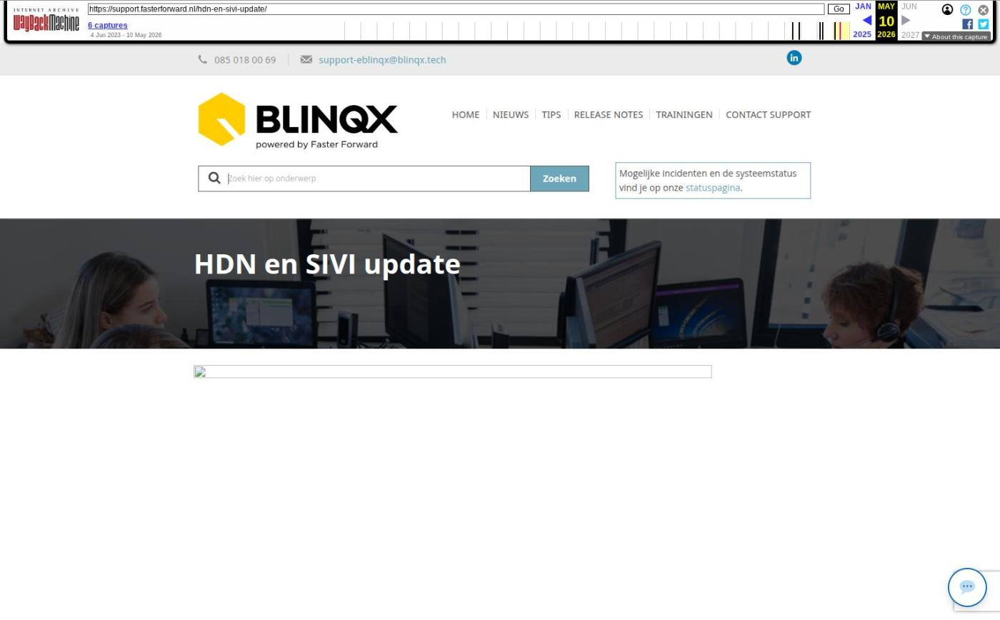

HDN en SIVI update

Tekstinhoud
Op dinsdag 9 mei wordt Elements voorbereid op de HDN 23 release die plaats vindt op 13 mei! Deze release bevat uitbreidingen van velden in de productkaart en nieuwe dekkingen volgens SIVI.
Minimaal verzekerd bedrag aangeven in levensverzekering
Doel financiering kredietaanvraag uitgebreid
Aanpassingen aanvraag bankgarantie (WX) Nationale Waarborg
Nieuwe dekkingen volgens SIVI up-to-date
Minimaal verzekerd bedrag aangeven in levensverzekering
In een levensverzekeringaanvraag (LX) is het mogelijk om het minimaal verzekerd bedrag op einddatum mee te sturen. In Elements wordt dit bedrag toegevoegd rechts in de productkaart van een levensverzekering.
Doel financiering kredietaanvraag uitgebreid
Er zijn twee nieuwe mogelijkheden toegevoegd waarmee je het doel van de financiering kunt aangeven, namelijk 'Camper' en 'Anders, zie toelichting'. De doel van de financiering wordt automatisch gevuld in de productkaart, zodra deze wordt meegestuurd in het kredietaanvraagbericht (KX) vanuit een adviespakket.
Aanpassingen aanvraag bankgarantie (WX) Nationale Waarborg
Op verzoek van Nationale Waarborg is het veld 'Bankgarantie kosten' voortaan een verplicht veld wanneer je een aanvraag bankgarantie vanuit Elements naar hen verstuurd. Daarnaast mogen de kopers in de aanvraag geen gebruik maken van hetzelfde e-mailadres. Wanneer dit het geval is, verschijnt er een melding dat één van de e-mailadressen aangepast moet worden om de aanvraag te kunnen verzenden.
Nieuwe dekkingen volgens SIVI up-to-date
Als via ADN en Aplaza berichten binnenkomen, worden de nieuwste, bijbehorende dekkingen en/of soorten documenten aangemaakt. Deze zijn namelijk uitgebreid volgens de SIVI richtlijnen van april. Hiermee zijn alle te selecteren verzekeringen up-to-date om correct te verwerken in een klantdossier.
Nieuwe dekkingen
Inventaris/goederen dekking
Weersomstandigheden
Geplaatst op 8 mei 2023
Laatste 5 releasenotes
Nog meer data en documenten vergelijken »
Gemakkelijk data en documenten vergelijken »
Verbeteringen boekhouding en facturatie »
Verbeteringen gespreksopname en onder de motorkap »
Verbeteringen onder de motorkap en gespreksopnames »